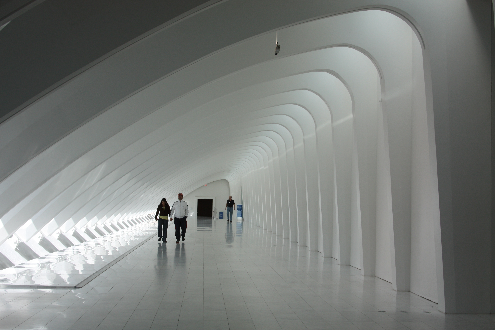

O museu de arte moderna de Milwaukee - WI, Estados Unidos da América

Japanese example: ご飯が熱い。
O museu de arte morderna de Milwuakee é um dos pontos turísticos dessa cidade tão agradável do norte dos EUA.
Após a visita ao museu, você ainda pode fazer um passeio na costa do lago:
- Fazer uma caminhada
- Passear de bicicleta
- Sujar os pés com areia e depois molhar nas ondas do "mar"
- Fazer um passeio de barco
- Praticar esportes ao ar livre
- Fazer um piquenique ou
- Comer num dos restarurantes na costa
Há muito mais coisas para se fazer!
Para ver mais visite o site.